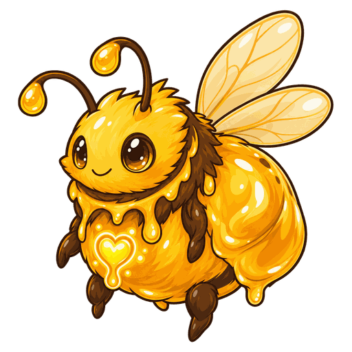
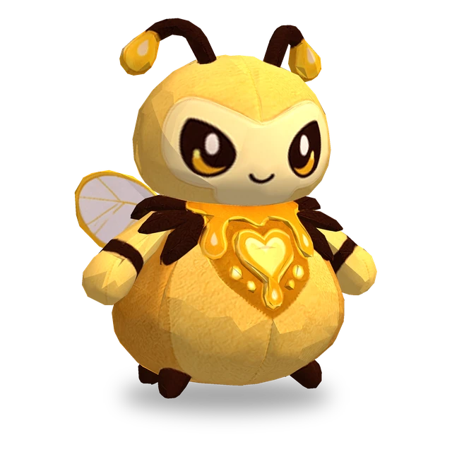

每升一級，生命值、攻擊力和魔力提高15%（最高Lv.11）。
No.022
提高普通攻擊造成傷害最多的一名隊友的攻擊速度，並為其普通攻擊附加魔法傷害；自身每進行數次普通攻擊，就會丟出一個蜂蜜罐，在被擊中的敵人周圍造成魔法傷害。
進化為蜜蜜女王
主動
使4格內本場戰鬥中普通攻擊造成傷害最多的一名其他隊友攻擊速度提高100%，持續4秒。在此期間，該隊友的普通攻擊每次命中都會額外造成相當於蜜蜜醬魔力60%的魔法傷害。
被動
每進行6次普通攻擊，就會同時丟出一個蜂蜜罐。該次攻擊命中時，蜂蜜罐會炸開，對被命中的敵人及其周圍1格內的所有敵人造成相當於魔力80%的魔法傷害。